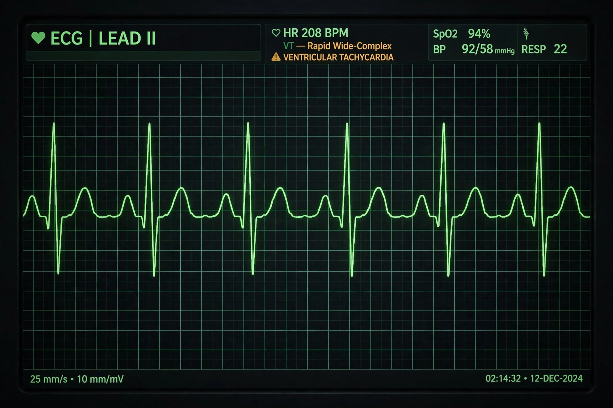

| Ventricular tachycardia | |
|---|---|
| Specialty | Cardiology |
| Symptoms | Palpitations, chest pain, breathlessness, dizziness, loss of consciousness; may be none |
| Causes | Coronary heart disease, cardiomyopathy, myocarditis, electrolyte disturbance, inherited channelopathies |
| Treatment | Defibrillation (pulseless), cardioversion, amiodarone, catheter ablation, implantable defibrillator |
Ventricular tachycardia (V-tach or VT) is a fast heart rhythm arising from the ventricles of the heart, defined as three or more consecutive ventricular beats at a rate above 100 per minute. It is classified as non-sustained (under 30 seconds) or sustained, and by morphology as monomorphic (uniform QRS complexes, usually from scar-related re-entry) or polymorphic (varying QRS, as in torsades de pointes). VT may cause no symptoms, or present with palpitations, chest pain, breathlessness or cardiac arrest; it is a leading mechanism of sudden cardiac death.

Most sustained monomorphic VT occurs in structural heart disease — prior myocardial infarction, cardiomyopathy or myocarditis — though a minority arises in structurally normal hearts ("idiopathic" VT). Polymorphic VT is associated with acute ischaemia or prolonged QT (torsades). On the ECG, VT shows a broad QRS tachycardia; distinguishing it from supraventricular tachycardia with aberrancy matters, and any haemodynamically unstable broad-complex tachycardia is treated as VT.
Pulseless VT is a shockable rhythm in resuscitation guidelines such as those of the European Resuscitation Council: immediate CPR (see Peter Safar) and unsynchronised defibrillation. Sustained VT with a pulse but instability requires synchronised cardioversion under sedation; stable patients receive antiarrhythmics such as amiodarone or procainamide, and correction of potassium and magnesium. Long-term management of the underlying disease includes catheter ablation of the arrhythmia substrate and implantation of an implantable cardioverter-defibrillator (ICD) for secondary prevention, which has been shown to reduce mortality in survivors of VT/VF arrest.